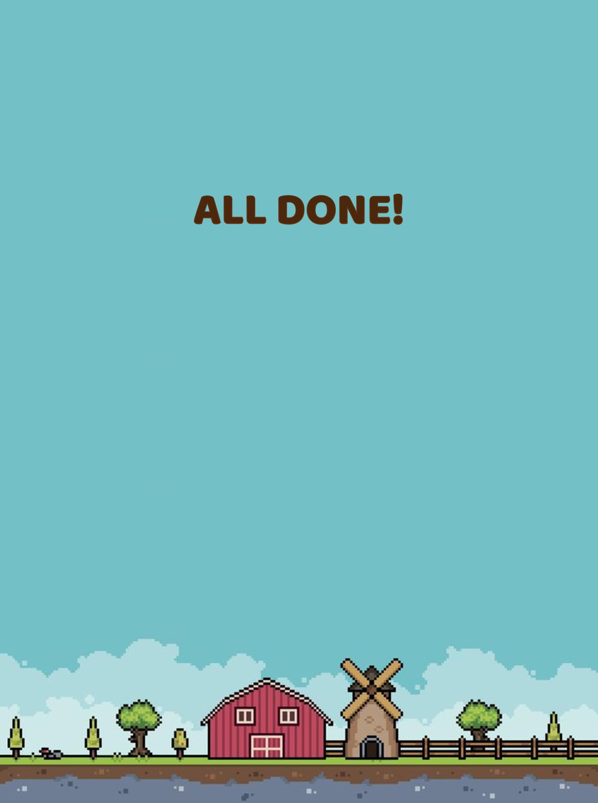

<!DOCTYPE html>
<html lang="en">
<head>
    <meta charset="UTF-8">
    <meta name="viewport" content="width=device-width, initial-scale=1.0, maximum-scale=1.0, user-scalable=no">
    <title>Star Farm</title>

    <script src="https://unpkg.com/jspsych@8.0.0"></script>
    <link href="https://unpkg.com/jspsych@8.0.0/css/jspsych.css" rel="stylesheet" type="text/css" />

    <script src="https://unpkg.com/@jspsych/plugin-audio-button-response@2.1.1"></script>
    <script src="https://unpkg.com/@jspsych/plugin-call-function@2.1.0"></script>
    <script src="https://unpkg.com/@jspsych/plugin-canvas-button-response@2.1.0"></script>
    <script src="https://unpkg.com/@jspsych/plugin-canvas-slider-response@2.1.0"></script>
    <script src="https://unpkg.com/@jspsych/plugin-free-sort@2.1.0"></script>
    <script src="https://unpkg.com/@jspsych/plugin-html-keyboard-response@2.0.0"></script>
    <script src="https://unpkg.com/@jspsych/plugin-html-button-response@2.1.0"></script>
    <script src="https://unpkg.com/@jspsych/plugin-html-slider-response@2.1.0"></script>
    <script src="https://unpkg.com/@jspsych/plugin-image-button-response@2.2.0"></script>
    <script src="https://unpkg.com/@jspsych/plugin-image-keyboard-response@2.1.0"></script>
    <script src="https://unpkg.com/@jspsych/plugin-image-slider-response@2.1.0"></script>
    <script src="https://unpkg.com/@jspsych/plugin-reconstruction@2.1.0"></script>
    <script src="https://unpkg.com/@jspsych/plugin-resize@2.1.0"></script>
    <script src="https://unpkg.com/@jspsych/plugin-video-button-response@2.1.1"></script>
    <script src="https://unpkg.com/@jspsych/plugin-video-slider-response@2.1.1"></script>
    <script src="https://unpkg.com/@jspsych/plugin-video-keyboard-response@2.1.1"></script>
    <script src="https://unpkg.com/@jspsych/plugin-preload@2.1.0"></script>

    <script src="config/settings.js"></script>
    <script src="config/functions.js"></script>
    <script src="config/conditions.js"></script>

    <script src="trials/custom_plugins.js"></script>
    <script src="trials/training_trial.js"></script>
    <script src="trials/testing_trial.js"></script>

    <link rel="stylesheet" href="css/styles.css">
</head>
<body></body>
<script>
var jsPsych = initJsPsych({
    on_finish: function() {
        jsPsych.data.displayData();
    }
});

var FUNCTION_BY_NUMBER = {
    1: 'positive_linear',
    2: 'negative_linear',
    3: 'quadratic',
    4: 'exponential_growth'
};

document.body.innerHTML = `
    <div style="max-width:500px; margin:80px auto; padding:40px; background:white;
                border-radius:12px; box-shadow:0 2px 8px rgba(0,0,0,0.1);
                font-family:-apple-system,sans-serif;">
        <h2>Star Farm — Session Setup</h2>
        <p style="color:#666;">Experimenter only.</p>

        <div style="margin:20px 0;">
            <label style="display:block; font-weight:bold;">Participant ID:</label>
            <input type="number" id="pid-input" min="1" step="1"
                   style="width:100%; padding:12px; font-size:18px;">
        </div>

        <div style="margin:20px 0;">
            <label style="display:block; font-weight:bold;">Age (years):</label>
            <input type="number" id="age-input" min="3" max="12" step="0.01"
                   style="width:100%; padding:12px; font-size:18px;">
        </div>

        <div style="margin:20px 0;">
            <label style="display:block; font-weight:bold;">Function:</label>
            <input type="number" id="function-input" min="1" max="4" step="1"
                   style="width:100%; padding:12px; font-size:18px;">
            <div style="font-size:13px; color:#666; margin-top:6px;">
                1 = Positive Linear &nbsp;&nbsp; 2 = Negative Linear &nbsp;&nbsp;
                3 = Quadratic &nbsp;&nbsp; 4 = Exponential Growth
            </div>
        </div>

        <button id="start-btn"
                style="width:100%; padding:16px; font-size:20px; background:#27ae60;
                       color:white; border:none; border-radius:8px; cursor:pointer;">
            Start Session
        </button>
        <div id="form-error" style="color:#e74c3c; margin-top:12px;"></div>
    </div>
`;

var params = new URLSearchParams(window.location.search);
if (params.get('pid')) document.getElementById('pid-input').value      = params.get('pid');
if (params.get('age')) document.getElementById('age-input').value      = params.get('age');
if (params.get('fn'))  document.getElementById('function-input').value = params.get('fn');

document.getElementById('start-btn').addEventListener('click', function() {
    var pid   = parseInt(document.getElementById('pid-input').value);
    var age   = parseFloat(document.getElementById('age-input').value);
    var fnNum = parseInt(document.getElementById('function-input').value);
    var err   = document.getElementById('form-error');

    if (!pid || pid < 1) { err.textContent = 'Enter a valid Participant ID.'; return; }
    if (!age || age < 4 || age > 9) { err.textContent = 'Enter a valid age (3–12).'; return; }
    if (!fnNum || fnNum < 1 || fnNum > 4) {
        err.textContent = 'Enter a Function number (1, 2, 3, or 4).'; return;
    }

    document.body.innerHTML = '';
    runExperiment(pid, age, fnNum);
});

// ============================================================
// MAIN EXPERIMENT
// ============================================================

function runExperiment(pid, age, fnNum) {

    var timeline = [];

    // ---- Helpers ----

    function playAudio(src) {
        var a = new Audio(src);
        a.play().catch(function() {});
        return a;
    }

    function positionBtnGrp() {
        var bg = document.getElementById('jspsych-html-button-response-btngroup');
        if (bg) {
            bg.style.position  = 'fixed';
            bg.style.bottom    = '50px';
            bg.style.right     = '50px';
            bg.style.top       = 'auto';
            bg.style.left      = 'auto';
            bg.style.textAlign = 'right';
        }
    }

    function addBtnSound() {
        var btn = document.querySelector('#jspsych-html-button-response-btngroup [data-choice="0"]');
        if (btn) btn.addEventListener('click', function() { playAudio('assets/audio/button_click.mp3'); });
    }

    function nextBtnHtml() {
        return '<button class="jspsych-btn" style="background:none; border:none; padding:0;">' +
               '</button>';
    }

    // Full-screen image + next button at bottom-right
    function makeImageNextSlide(imgSrc) {
        return {
            type: jsPsychHtmlButtonResponse,
            stimulus: '<div style="position:fixed;top:0;left:0;width:100vw;height:100vh;margin:0;padding:0;">' +
                      '</div>',
            choices: ['next'],
            button_html: nextBtnHtml,
            on_load: function() { positionBtnGrp(); addBtnSound(); }
        };
    }

    // Full-screen image + tap anywhere to advance
    function makeTouchSlide(imgSrc) {
        return {
            type: jsPsychHtmlButtonResponse,
            stimulus: '<div style="position:fixed;top:0;left:0;width:100vw;height:100vh;margin:0;padding:0;">' +
                      '</div>',
            choices: ['tap-anywhere'],
            button_html: function() {
                return '<button class="jspsych-btn" ' +
                       'style="position:fixed;top:0;left:0;width:100vw;height:100vh;' +
                       'background:transparent;border:none;cursor:pointer;z-index:1;"></button>';
            }
        };
    }

    // Video slide — plays to completion, no button
    function makeVideoSlide(videoSrc) {
        return {
            type: jsPsychVideoButtonResponse,
            stimulus: [videoSrc],
            choices: [],
            trial_ends_after_video: true,
            response_allowed_while_playing: false
        };
    }

    // ---- Preload ----
    var preload = {
        type: jsPsychPreload,
        images: [
            'assets/images/all_done.jpeg',
            'assets/images/brown_fertilizer_bar.png',
            'assets/images/brown_seed.jpeg',
            'assets/images/brown_seed_fertilizer.jpeg',
            'assets/images/brown_seed_planted.jpeg',
            'assets/images/brown_seed_soil.jpeg',
            'assets/images/brown_vine.png',
            'assets/images/green_seed.jpeg',
            'assets/images/green_seed_grown.jpeg',
            'assets/images/green_seed_planted.jpeg',
            'assets/images/green_seed_soil.jpeg',
            'assets/images/green_seed_water_marked.jpeg',
            'assets/images/intro_end.jpeg',
            'assets/images/intro_start.jpeg',
            'assets/images/main.jpeg',
            'assets/images/next_button.png',
            'assets/images/ok_button.png',
            'assets/images/pink_seed.jpeg',
            'assets/images/pink_seed_grown.jpeg',
            'assets/images/pink_seed_planted.jpeg',
            'assets/images/pink_seed_soil.jpeg',
            'assets/images/pink_seed_water_marked.jpeg',
            'assets/images/seed_list.jpeg',
            'assets/images/water_bar.png'
        ],
        audio: [
            'assets/audio/background_music.mp3',
            'assets/audio/background_music_2.mp3',
            'assets/audio/button_click.mp3',
            'assets/audio/fertilizer.mp3',
            'assets/audio/ok_button_click.mp3'
        ],
        video: [
            'assets/videos/get_gold_coins.mp4',
            'assets/videos/get_gold_coins2.mp4',
            'assets/videos/grow_green_seed.mp4',
            'assets/videos/grow_pink_seed.mp4',
            'assets/videos/intro.mp4',
            'assets/videos/plant_brown_seed.mp4',
            'assets/videos/plant_green_seed.mp4',
            'assets/videos/plant_pink_seed.mp4',
            'assets/videos/receive_brown_seed.mp4',
            'assets/videos/receive_green_seed.mp4',
            'assets/videos/receive_pink_seed.mp4'
        ],
        show_progress_bar: true,
        message: 'Getting the farm ready...',
        continue_after_error: true
    };
    timeline.push(preload);

    // ============================================================
    // FAMILIARIZATION PHASE
    // ============================================================

    // intro_1: main image + background music + next button
    var intro_1 = {
        type: jsPsychHtmlButtonResponse,
        stimulus: '<div style="position:fixed;top:0;left:0;width:100vw;height:100vh;margin:0;padding:0;">' +
                  '</div>',
        choices: ['next'],
        button_html: nextBtnHtml,
        on_load: function() {
            window.bgMusic = new Audio('assets/audio/background_music.mp3');
            window.bgMusic.loop   = true;
            window.bgMusic.volume = 0.4;
            window.bgMusic.play().catch(function(e) { console.log('autoplay blocked:', e); });
            positionBtnGrp();
            addBtnSound();
        },
        on_finish: function() {
            if (window.bgMusic) { window.bgMusic.pause(); window.bgMusic = null; }
        }
    };
    timeline.push(intro_1);

    // intro_2: intro_start image + next button
    timeline.push(makeImageNextSlide('assets/images/intro_start.jpeg'));

    // intro_3: intro video
    timeline.push(makeVideoSlide('assets/videos/intro.mp4'));

    // intro_4: intro_end image + next button
    timeline.push(makeImageNextSlide('assets/images/intro_end.jpeg'));

    // intro_5: seed_list + next button
    timeline.push(makeImageNextSlide('assets/images/seed_list.jpeg'));

    // intro_6: receive_pink_seed video
    timeline.push(makeVideoSlide('assets/videos/receive_pink_seed.mp4'));

    // intro_7: pink_seed image + next button
    timeline.push(makeImageNextSlide('assets/images/pink_seed.jpeg'));

    // intro_8: pink_seed_soil + tap anywhere
    timeline.push(makeTouchSlide('assets/images/pink_seed_soil.jpeg'));

    // intro_9: plant_pink_seed video
    timeline.push(makeVideoSlide('assets/videos/plant_pink_seed.mp4'));

    // intro_10: pink_seed_planted + next button
    timeline.push(makeImageNextSlide('assets/images/pink_seed_planted.jpeg'));

    // intro_11: pink_seed_water_marked + interactive water bar + ok button
    var intro_11 = {
        type: jsPsychHtmlButtonResponse,
        stimulus: `
            <div style="position:fixed; top:0; left:0; width:100vw; height:100vh; margin:0; padding:0;">
                
                <div id="water-bar-track" style="
                    position: absolute;
                    left:   8%;
                    bottom: 0.5%;
                    width:  90%;
                    height: 3.8%;
                    cursor: pointer;
                    touch-action: none;
                    user-select: none;
                    -webkit-user-select: none;
                    overflow: hidden;
                ">
                    <div id="water-fill" style="
                        position: absolute; top:0; left:0;
                        width: 0%;
                        height: 100%;
                        background-image: url('assets/images/water_bar.png');
                        background-size: 100% 100%;
                        background-repeat: no-repeat;
                        pointer-events: none;
                    "></div>
                </div>
            </div>
        `,
        choices: ['OK'],
        button_html: function() {
            return '<button id="ok-btn" class="jspsych-btn" ' +
                   'style="display:none; position:fixed; bottom:50px; right:50px; ' +
                   'background:none; border:none; padding:0; cursor:pointer; z-index:10;">' +
                   '</button>';
        },
        data: { task: 'familiarization_water' },
        on_load: function() {
            var track         = document.getElementById('water-bar-track');
            var fill          = document.getElementById('water-fill');
            var okBtn         = document.getElementById('ok-btn');
            var hasInteracted = false;
            var responsePct   = 0;
            var responsePx    = 0;
            var firstMoveTs   = null;
            var startTs       = performance.now();

            if (okBtn) {
                okBtn.addEventListener('click', function() {
                    playAudio('assets/audio/ok_button_click.mp3');
                });
            }

            function updateFill(clientX) {
                var rect = track.getBoundingClientRect();
                var x = Math.max(0, Math.min(clientX - rect.left, rect.width));
                fill.style.width = x + 'px';
                responsePx  = x;
                responsePct = (x / rect.width) * 100;
                if (!hasInteracted) {
                    hasInteracted = true;
                    firstMoveTs = performance.now() - startTs;
                    okBtn.style.display = 'inline-block';
                }
            }

            var dragging = false;
            track.addEventListener('pointerdown', function(e) {
                dragging = true;
                try { track.setPointerCapture(e.pointerId); } catch(err) {}
                updateFill(e.clientX); e.preventDefault();
            });
            track.addEventListener('pointermove', function(e) {
                if (!dragging) return;
                updateFill(e.clientX); e.preventDefault();
            });
            track.addEventListener('pointerup', function(e) {
                dragging = false;
                try { track.releasePointerCapture(e.pointerId); } catch(err) {}
            });
            track.addEventListener('pointercancel', function() { dragging = false; });

            window._waterTrialData = {
                getResponse: function() {
                    return {
                        response_pct:     responsePct,
                        response_pixels:  responsePx,
                        bar_width_pixels: track.getBoundingClientRect().width,
                        interacted:       hasInteracted,
                        first_move_rt_ms: firstMoveTs ? Math.round(firstMoveTs) : null
                    };
                }
            };
        },
        on_finish: function(data) {
            if (window._waterTrialData) {
                var r = window._waterTrialData.getResponse();
                data.response_pct     = r.response_pct;
                data.response_pixels  = r.response_pixels;
                data.bar_width_pixels = r.bar_width_pixels;
                data.interacted       = r.interacted;
                data.first_move_rt_ms = r.first_move_rt_ms;
                window._waterTrialData = null;
            }
        }
    };
    timeline.push(intro_11);

    // intro_12: grow_pink_seed video
    timeline.push(makeVideoSlide('assets/videos/grow_pink_seed.mp4'));

    // intro_13: pink_seed_grown + next button
    timeline.push(makeImageNextSlide('assets/images/pink_seed_grown.jpeg'));

    // intro_14: get_gold_coins video
    timeline.push(makeVideoSlide('assets/videos/get_gold_coins.mp4'));

    // intro_15: seed_list + next button
    timeline.push(makeImageNextSlide('assets/images/seed_list.jpeg'));

    // intro_16: receive_green_seed video
    timeline.push(makeVideoSlide('assets/videos/receive_green_seed.mp4'));

    // intro_17: green_seed image + next button
    timeline.push(makeImageNextSlide('assets/images/green_seed.jpeg'));

    // intro_18: green_seed_soil + tap anywhere
    timeline.push(makeTouchSlide('assets/images/green_seed_soil.jpeg'));

    // intro_19: plant_green_seed video
    timeline.push(makeVideoSlide('assets/videos/plant_green_seed.mp4'));

    // intro_20: green_seed_planted + next button
    timeline.push(makeImageNextSlide('assets/images/green_seed_planted.jpeg'));

    // intro_21: green_seed_water_marked + next button (non-interactive, just shows the image)
    timeline.push(makeImageNextSlide('assets/images/green_seed_water_marked.jpeg'));

    // intro_22: grow_green_seed video
    timeline.push(makeVideoSlide('assets/videos/grow_green_seed.mp4'));

    // intro_23: green_seed_grown + next button
    timeline.push(makeImageNextSlide('assets/images/green_seed_grown.jpeg'));

    // intro_24: get_gold_coins video
    timeline.push(makeVideoSlide('assets/videos/get_gold_coins.mp4'));

    // ============================================================
    // TRAINING PHASE
    // ============================================================

    // fun_1: seed_list + next button
    timeline.push(makeImageNextSlide('assets/images/seed_list.jpeg'));

    // fun_2: receive_brown_seed video
    timeline.push(makeVideoSlide('assets/videos/receive_brown_seed.mp4'));

    // fun_3: brown_seed image + next button
    timeline.push(makeImageNextSlide('assets/images/brown_seed.jpeg'));

    // fun_4: brown_seed_soil + tap anywhere
    timeline.push(makeTouchSlide('assets/images/brown_seed_soil.jpeg'));

    // fun_5: plant_brown_seed video
    timeline.push(makeVideoSlide('assets/videos/plant_brown_seed.mp4'));

    // fun_6: brown_seed_planted + next button
    timeline.push(makeImageNextSlide('assets/images/brown_seed_planted.jpeg'));

    // fun_7: brown_seed_fertilizer intro + next button
    timeline.push(makeImageNextSlide('assets/images/brown_seed_fertilizer.jpeg'));

    // ---- Trial assets (brown seed) ----
    var TRAINING_BG      = 'assets/images/brown_seed_fertilizer.jpeg';
    var FILL_IMAGE       = 'assets/images/brown_vine.png';
    var FERTILIZER_IMAGE = 'assets/images/brown_fertilizer_bar.png';

    var BAR_POSITION = {
        bar_left:   '47%',
        bar_bottom: '8%',
        bar_width:  '5%',
        bar_height: '85%'
    };
    var FERT_POSITION = {
        fert_left:   '8%',
        fert_bottom: '0.5%',
        fert_width:  '90%',
        fert_height: '3.8%'
    };

    // ---- buildTrial ----
    // Training (show_feedback:true):  jsPsych OK button → advances to feedback trial
    // Testing  (show_feedback:false): custom OK in stimulus → shows jsPsych next button
    function buildTrial(opts) {
        var isTesting    = !opts.show_feedback;
        var bgImg        = opts.background        || TRAINING_BG;
        var fertImg      = opts.fertilizer_image  || FERTILIZER_IMAGE;
        var fillImg      = opts.fill_image        || FILL_IMAGE;

        var customOkHtml = isTesting
            ? '<div id="custom-ok" style="display:none; position:fixed; bottom:50px; right:50px;' +
              ' z-index:10; cursor:pointer;">' +
              '</div>'
            : '';

        return {
            type: jsPsychHtmlButtonResponse,
            stimulus: '<div style="position:fixed;top:0;left:0;width:100vw;height:100vh;margin:0;padding:0;">' +
                '' +
                // Fertilizer bar (starts 0%, animates in on_load)
                '<div style="position:absolute;' +
                    'left:' + (opts.fert_left||FERT_POSITION.fert_left) + ';' +
                    'bottom:' + (opts.fert_bottom||FERT_POSITION.fert_bottom) + ';' +
                    'width:' + (opts.fert_width||FERT_POSITION.fert_width) + ';' +
                    'height:' + (opts.fert_height||FERT_POSITION.fert_height) + ';' +
                    'overflow:hidden;pointer-events:none;">' +
                    '<div id="fert-fill" style="position:absolute;top:0;left:0;width:0%;height:100%;' +
                        'background-image:url(\'' + fertImg + '\');' +
                        'background-size:100% 100%;background-repeat:no-repeat;' +
                        'background-position:left center;"></div>' +
                '</div>' +
                // Vine bar track (vertical, interactive)
                '<div id="vine-bar-track" style="position:absolute;' +
                    'left:' + (opts.bar_left||BAR_POSITION.bar_left) + ';' +
                    'bottom:' + (opts.bar_bottom||BAR_POSITION.bar_bottom) + ';' +
                    'width:' + (opts.bar_width||BAR_POSITION.bar_width) + ';' +
                    'height:' + (opts.bar_height||BAR_POSITION.bar_height) + ';' +
                    'cursor:pointer;touch-action:none;user-select:none;-webkit-user-select:none;overflow:hidden;">' +
                    '' +
                '</div>' +
                customOkHtml +
                '</div>',

            choices: isTesting ? ['next'] : ['OK'],
            button_html: isTesting
                ? function() {
                    return '<button id="jspsych-next-btn" class="jspsych-btn" ' +
                           'style="display:none;position:fixed;bottom:50px;right:50px;' +
                           'background:none;border:none;padding:0;cursor:pointer;z-index:10;">' +
                           '</button>';
                  }
                : function() {
                    return '<button id="ok-btn" class="jspsych-btn" ' +
                           'style="display:none;position:fixed;bottom:50px;right:50px;' +
                           'background:none;border:none;padding:0;cursor:pointer;z-index:10;">' +
                           '</button>';
                  },

            data: {
                task:        opts.trial_label,
                input_value: opts.input_value,
                true_output: opts.true_output,
                trial_index: opts.trial_index
            },

            on_load: function() {
                var track    = document.getElementById('vine-bar-track');
                var fill     = document.getElementById('vine-fill');
                var fertFill = document.getElementById('fert-fill');

                var hasInteracted = false;
                var responsePct   = 0;
                var responsePx    = 0;
                var firstMoveTs   = null;
                var startTs       = performance.now();

                // Fertilizer fill animation + sound
                if (fertFill) {
                    playAudio('assets/audio/fertilizer.mp3');
                    setTimeout(function() {
                        fertFill.style.transition = 'width 1000ms ease-out';
                        fertFill.style.width = opts.input_value + '%';
                    }, 100);
                }

                function updateFill(clientY) {
                    var rect = track.getBoundingClientRect();
                    var y = Math.max(0, Math.min(rect.bottom - clientY, rect.height));
                    responsePx  = y;
                    responsePct = (y / rect.height) * 100;
                    fill.style.clipPath = 'inset(' + (100 - responsePct) + '% 0 0 0)';
                    if (!hasInteracted) {
                        hasInteracted = true;
                        firstMoveTs = performance.now() - startTs;
                        if (isTesting) {
                            var c = document.getElementById('custom-ok');
                            if (c) c.style.display = 'inline-block';
                        } else {
                            var o = document.getElementById('ok-btn');
                            if (o) o.style.display = 'inline-block';
                        }
                    }
                }

                var dragging = false;
                track.addEventListener('pointerdown', function(e) {
                    dragging = true;
                    try { track.setPointerCapture(e.pointerId); } catch(err) {}
                    updateFill(e.clientY); e.preventDefault();
                });
                track.addEventListener('pointermove', function(e) {
                    if (!dragging) return;
                    updateFill(e.clientY); e.preventDefault();
                });
                track.addEventListener('pointerup', function(e) {
                    dragging = false;
                    try { track.releasePointerCapture(e.pointerId); } catch(err) {}
                });
                track.addEventListener('pointercancel', function() { dragging = false; });

                window._vineTrialData = {
                    getResponse: function() {
                        return {
                            response_pct:      responsePct,
                            response_pixels:   responsePx,
                            bar_height_pixels: track ? track.getBoundingClientRect().height : 0,
                            interacted:        hasInteracted,
                            first_move_rt_ms:  firstMoveTs ? Math.round(firstMoveTs) : null
                        };
                    }
                };

                if (isTesting) {
                    var customOk = document.getElementById('custom-ok');
                    var nextBtn  = document.getElementById('jspsych-next-btn');
                    if (customOk) {
                        customOk.addEventListener('click', function() {
                            playAudio('assets/audio/ok_button_click.mp3');
                            track.style.pointerEvents = 'none';
                            customOk.style.display = 'none';
                            if (nextBtn) {
                                nextBtn.style.display = 'inline-block';
                                nextBtn.addEventListener('click', function() {
                                    playAudio('assets/audio/button_click.mp3');
                                });
                            }
                        });
                    }
                } else {
                    var okBtn = document.getElementById('ok-btn');
                    if (okBtn) {
                        okBtn.addEventListener('click', function() {
                            playAudio('assets/audio/ok_button_click.mp3');
                        });
                    }
                }
            },

            on_finish: function(data) {
                if (window._vineTrialData) {
                    var r = window._vineTrialData.getResponse();
                    data.response_pct      = r.response_pct;
                    data.response_pixels   = r.response_pixels;
                    data.bar_height_pixels = r.bar_height_pixels;
                    data.interacted        = r.interacted;
                    data.first_move_rt_ms  = r.first_move_rt_ms;
                    window._vineTrialData  = null;
                    window._lastResponsePct = data.response_pct;
                }
            }
        };
    }

    // ---- buildFeedbackTrial ----
    // Shows participant's guess (gray), then true vine grows from 0.
    // Next button appears after animation; no auto-advance.
    function buildFeedbackTrial(opts) {
        var bgImg   = opts.background       || TRAINING_BG;
        var fertImg = opts.fertilizer_image || FERTILIZER_IMAGE;
        var fillImg = opts.fill_image       || FILL_IMAGE;

        return {
            type: jsPsychHtmlButtonResponse,
            stimulus: '<div style="position:fixed;top:0;left:0;width:100vw;height:100vh;margin:0;padding:0;">' +
                '' +
                // Fertilizer bar (pre-filled at input_value, no animation)
                '<div style="position:absolute;' +
                    'left:' + (opts.fert_left||FERT_POSITION.fert_left) + ';' +
                    'bottom:' + (opts.fert_bottom||FERT_POSITION.fert_bottom) + ';' +
                    'width:' + (opts.fert_width||FERT_POSITION.fert_width) + ';' +
                    'height:' + (opts.fert_height||FERT_POSITION.fert_height) + ';' +
                    'overflow:hidden;pointer-events:none;">' +
                    '<div style="position:absolute;top:0;left:0;' +
                        'width:' + opts.input_value + '%;height:100%;' +
                        'background-image:url(\'' + fertImg + '\');' +
                        'background-size:100% 100%;background-repeat:no-repeat;' +
                        'background-position:left center;"></div>' +
                '</div>' +
                // Vine bar
                '<div id="feedback-track" style="position:absolute;' +
                    'left:' + (opts.bar_left||BAR_POSITION.bar_left) + ';' +
                    'bottom:' + (opts.bar_bottom||BAR_POSITION.bar_bottom) + ';' +
                    'width:' + (opts.bar_width||BAR_POSITION.bar_width) + ';' +
                    'height:' + (opts.bar_height||BAR_POSITION.bar_height) + ';' +
                    'overflow:hidden;">' +
                    // Participant guess vine (gray)
                    '' +
                    // True output vine (solid, grows from 0)
                    '' +
                    // Red dashed marker at participant's guess
                    '<div id="fb-marker" style="' +
                        'position:absolute;left:-5%;right:-5%;bottom:0%;height:0;' +
                        'border-top:4px dashed #e74c3c;opacity:0;' +
                        'transition:opacity 300ms ease-in;pointer-events:none;"></div>' +
                '</div>' +
                '</div>',

            choices: ['next'],
            button_html: function() {
                return '<button id="fb-next-btn" class="jspsych-btn" ' +
                       'style="display:none;position:fixed;bottom:50px;right:50px;' +
                       'background:none;border:none;padding:0;cursor:pointer;z-index:10;">' +
                       '</button>';
            },
            data: {
                task:        'feedback',
                input_value:  opts.input_value,
                true_output:  opts.true_output,
                trial_index:  opts.trial_index
            },

            on_load: (function(trueOutput) {
                return function() {
                    var guessVine = document.getElementById('guess-vine');
                    var trueVine  = document.getElementById('true-vine');
                    var marker    = document.getElementById('fb-marker');
                    var nextBtn   = document.getElementById('fb-next-btn');

                    var responsePct = (typeof window._lastResponsePct === 'number')
                                      ? window._lastResponsePct : 0;

                    // Step 1: show participant's guess (gray vine)
                    guessVine.style.transition = 'none';
                    guessVine.style.clipPath = 'inset(' + (100 - responsePct) + '% 0 0 0)';
                    marker.style.bottom = responsePct + '%';
                    guessVine.offsetHeight; // force repaint

                    // Step 2: fade in red marker
                    setTimeout(function() { marker.style.opacity = '1'; }, 300);

                    // Step 3: grow true vine from 0 to truth
                    setTimeout(function() {
                        trueVine.style.transition = 'clip-path 1200ms ease-out';
                        trueVine.style.clipPath = 'inset(' + (100 - trueOutput) + '% 0 0 0)';
                    }, 700);

                    // Step 4: reveal next button after animation completes
                    setTimeout(function() {
                        if (nextBtn) {
                            nextBtn.style.display = 'inline-block';
                            nextBtn.addEventListener('click', function() {
                                playAudio('assets/audio/button_click.mp3');
                            });
                        }
                        window._lastResponsePct = null;
                    }, 2200);
                };
            })(opts.true_output)
        };
    }

    // ---- Select function definition ----
    var FN = FUNCTIONS[fnNum];
    if (!FN) { console.error('No function definition for fnNum=' + fnNum); return; }

    // ---- Push training trials (response + feedback pairs) ----
    for (var i = 0; i < FN.training.inputs.length; i++) {
        timeline.push(buildTrial({
            background:       TRAINING_BG,
            fill_image:       FILL_IMAGE,
            fertilizer_image: FERTILIZER_IMAGE,
            input_value:      FN.training.inputs[i],
            true_output:      FN.training.outputs[i],
            show_feedback:    true,
            trial_label:      'training',
            trial_index:      i + 1,
            bar_left:    BAR_POSITION.bar_left,
            bar_bottom:  BAR_POSITION.bar_bottom,
            bar_width:   BAR_POSITION.bar_width,
            bar_height:  BAR_POSITION.bar_height,
            fert_left:   FERT_POSITION.fert_left,
            fert_bottom: FERT_POSITION.fert_bottom,
            fert_width:  FERT_POSITION.fert_width,
            fert_height: FERT_POSITION.fert_height
        }));
        timeline.push(buildFeedbackTrial({
            background:       TRAINING_BG,
            fill_image:       FILL_IMAGE,
            fertilizer_image: FERTILIZER_IMAGE,
            input_value:      FN.training.inputs[i],
            true_output:      FN.training.outputs[i],
            trial_index:      i + 1,
            bar_left:    BAR_POSITION.bar_left,
            bar_bottom:  BAR_POSITION.bar_bottom,
            bar_width:   BAR_POSITION.bar_width,
            bar_height:  BAR_POSITION.bar_height,
            fert_left:   FERT_POSITION.fert_left,
            fert_bottom: FERT_POSITION.fert_bottom,
            fert_width:  FERT_POSITION.fert_width,
            fert_height: FERT_POSITION.fert_height
        }));
    }

    // ============================================================
    // TESTING PHASE
    // ============================================================

    // fun_8: testing intro + next button
    timeline.push(makeImageNextSlide('assets/images/brown_seed_fertilizer.jpeg'));

    // ---- Push testing trials (response only, no feedback) ----
    for (var j = 0; j < FN.testing.inputs.length; j++) {
        timeline.push(buildTrial({
            background:       TRAINING_BG,
            fill_image:       FILL_IMAGE,
            fertilizer_image: FERTILIZER_IMAGE,
            input_value:      FN.testing.inputs[j],
            true_output:      FN.testing.outputs[j],
            show_feedback:    false,
            trial_label:      'testing',
            trial_index:      j + 1,
            bar_left:    BAR_POSITION.bar_left,
            bar_bottom:  BAR_POSITION.bar_bottom,
            bar_width:   BAR_POSITION.bar_width,
            bar_height:  BAR_POSITION.bar_height,
            fert_left:   FERT_POSITION.fert_left,
            fert_bottom: FERT_POSITION.fert_bottom,
            fert_width:  FERT_POSITION.fert_width,
            fert_height: FERT_POSITION.fert_height
        }));
    }

    // ============================================================
    // ENDING
    // ============================================================

    // end_1: all_done image + background_music_2 + next button
    var end_1 = {
        type: jsPsychHtmlButtonResponse,
        stimulus: '<div style="position:fixed;top:0;left:0;width:100vw;height:100vh;margin:0;padding:0;">' +
                  '</div>',
        choices: ['next'],
        button_html: nextBtnHtml,
        on_load: function() {
            window.bgMusic2 = new Audio('assets/audio/background_music_2.mp3');
            window.bgMusic2.loop   = true;
            window.bgMusic2.volume = 0.4;
            window.bgMusic2.play().catch(function(e) { console.log('autoplay blocked:', e); });
            positionBtnGrp();
            addBtnSound();
        }
    };
    timeline.push(end_1);

    // end_2: get_gold_coins2 video
    timeline.push(makeVideoSlide('assets/videos/get_gold_coins2.mp4'));

    jsPsych.run(timeline);
}
</script>
</html>
